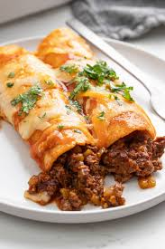
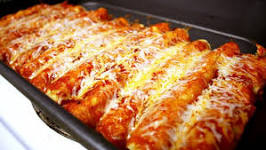

History
Enchiladas originated in Mexico, where the practice of rolling tortillas around other food dates back at least to Aztec times. The people living in the lake region of the Valley of Mexico traditionally ate corn tortillas folded or rolled around small fish.
Ingredients
- 2 tablespoons avocado oil (or olive oil)
- 1 small white onion, peeled and diced
- 1 1/2 pounds boneless skinless chicken breasts, diced into small 1/2-inch pieces
- 1 (4-ounce) can diced green chiles
- sea salt and freshly-cracked black pepper
- 1 (15-ounce) can black beans, rinsed and drained
- 8 large flour tortillas
- Enchilada Sauce
Oil and flour, Chili powder, Garlic powder, ground cumin, dried oregano, and lastly Fine sea salt.
Directions
- Prep oven and enchilada sauce
- Sauté the filling mixture
- sauté for 3 minutes
- Sauté the mixture for 6-8 minutes
- Assemble the enchiladas
- Bake uncovered for 20 minutes
- Serve
Video
- Reference List Entry
- Ali. “Chicken Enchiladas Recipe.” Gimme Some Oven, 17 Oct. 2009, Recipe